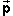
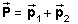
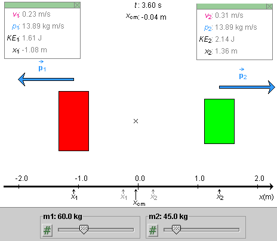

Prerequisites
Students should have a basic knowledge of vectors and vector addition and be familiar with the concepts of velocity, speed, mass, and center of mass.
Learning Outcomes
Students will be able to state the definition of momentum and the law of momentum conservation for isolated systems, and will be able to apply this law to make predictions about the velocities, speeds, and kinetic energies of the particles in the system. They will be able to predict the motion of the center of mass of the system from knowledge of the total momentum of the system.
Instructions
Students should know how the applet functions, as described in Help and ShowMe.
The applet should be open. The step-by-step instructions in the following text are to be done in the applet. You may need to toggle back and forth between instructions and applet if your screen space is limited.
 Momentum and Momentum
Conservation
Momentum and Momentum
Conservation
 Speed, Velocity,
Momentum, and Kinetic Energy
Speed, Velocity,
Momentum, and Kinetic Energy
 Center of Mass and Total Momentum
Center of Mass and Total Momentum
Definition of Momentum
The momentum of a particle of mass m and velocityis defined as the product
 = m
(1)
As the definition implies, momentum is a vector quantity. It is denoted by the symbol . The momentum vector points in the same direction as the velocity vector.
The (total) momentum
of a system of particles, denoted by a capital P with arrow, is defined as the vector sum of the momenta of the individual particles,
 .
Law of Momentum Conservation
Version A. The total momentum of an isolated system of particles is conserved.Version B. The total momentum of a system of particles is conserved if the total external force acting on the system is zero.
Comments. Version A is a special case of Version B. If a system is isolated, i.e., not interacting with anything external to the system, the system does not experience any external forces whatsoever so that the sum of such forces is obviously zero.
In Version B, the system does not have to be isolated but can be interacting with its environment. In this case, the total momentum of the system still is conserved, as long as the external forces add up to zero.
The law of momentum conservation is a consequence of Newton's third law for systems to which the latter applies. Newton's third law says that the internal forces come in equal and opposite pairs. Such force pairs cause equal and opposite momentum changes for the particle pairs on which they act, thus causing zero overall momentum change.

Exercise 1 - Speed and Velocity. Reset the applet. The masses of the skaters will be set to 60 kg (skater on the left) and 45 kg (skater on the right). Play the motion.
In this Exercise you will analyze a physically equivalent system in which the skaters are replaced by blocks.
Click Replay and Show Blocks. The two blocks are side-by-side. Record their x-coordinates x1 and x2, as well as the coordinate xCM of the center of mass of the system.
Play the motion and pause it when block 1, the red one, is roughly at x1 = -1 m. You should see a display similar to that in Figure 1 below.

Figure 1
Record the current positions of the two blocks and the time t elapsed. Then calculate the speeds of the two blocks from the data recorded. Let's assume for the moment that the speeds are constant, so that one can find the instantaneous speeds by calculating the average speeds over the entire time interval elapsed.
Answer. The data for block 1 (red) as shown in Figure 1 and as recorded at t = 0 are as follows:
t = 0: x1 = -0.25 m
t = 3.60 s: x1 = -1.08 m
From the definition of speed, distance traveled divided by time elapsed, the speed v1 of block 1 is
v1 = |-1.08 - (-0.25)| / 3.60 = 0.23 m/s.
 (3)
(3)
Compare this with the value of v1 shown in the data box for block 1.
Similarly, for block 2,
t = 0: x2 = 0.25 m
t = 3.60 s: x2 = 1.36 m
From the definition of speed, distance traveled divided by time elapsed, the speed v2 of block 2 (green) is
v2 = |1.36 - 0.25| / 3.60 = 0.31 m/s.
 (4)
(4)
As to the velocities, the simulation shows that they are in opposite directions. Thus their x-components, with the x-axis horizontal and pointing to the right, are
vx1 = -0.23 m/s  and
and  vx2 = 0.31 m/s.
vx2 = 0.31 m/s.  (5)
(5)
Comment. You may want to continue the motion and pause it again when the blocks are farther apart. Again calculate the average speeds of the two blocks over the entire time interval from the beginning and verify that you get the same values as before, thus verifying that the speeds are constant.
Exercise 2 - Momentum. From the results of Exercise 1 and the given masses, calculate the momenta of the two blocks at t = 3.60 s.
From the definition of momentum, the magnitude p1 of the momentum of block 1 is equal to
p1 = m1
v1 = 60×0.23 = 14 kg m/s .
 (6)
(6)
Similarly, for block 2,
p2 = m2
v1 = 45×0.31 = 14 kg m/s .
 (7)
(7)
The values in the data boxes are consistent with these values, to within the precision available from the position values.
The magnitudes of the two momenta are equal. Since the momenta are in opposite directions, like the velocities, the vector sum of the two momenta at t = 1.11 s is zero. According to the law of momentum conservation, this is as it should be because initially the total momentum of the two-block system (or the two-skater system) is clearly zero when both objects are at rest.
Question. Why should the total momentum of this system be conserved?
Answer. The two-block system is not isolated because the blocks must be assumed to be sliding on some supporting surfaces that exert upward normal forces on the blocks. The skaters obviously are sliding on ice. The normal forces are opposite to the downward gravitational forces exerted on the blocks or skaters by the earth. These two kinds of forces add up to zero because these objects are not accelerating in the vertical direction. Thus, the total external force acting on the system in the vertical direction is zero. The system is assumed to be frictionless so the exertenal horizontal forces acting on it are zero as well. Thus, the total external force acting on the system is zero and Version B of the Law of Momentum Conservation applies.
Note that the forces due to the initial push that the skaters exert on each other or due to the explosion between the blocks are internal forces, which do not need to be considered in the Law of Momentum Conservation. (It is assumed here that the exploding material in the case of the blocks is part of that system and that the exploding material has negligible mass so that it cannot take up any momentum.)
Exercise 3 - Kinetic Energy. From the results of Exercise 1 or Exercise 2 and the given masses, calculate the kinetic energies of the two blocks at t = 3.60 s.
Answer.
Calculation 1. The kinetic energy KE of a particle of mass m and speed v is defined as
KE = (m/2) v2 .  (8)
(8)
Substituting the data from Figure 1 into this definition gives for the kinetic energy of Block 1, within the precision afforded by the speed data, the value
KE1 = (m1/2)
v12 = 60/2×0.232
= 1.6 J .  (9)
(9)
Similarly, for Block 2,
KE2 = (m2/2)
v22 = 45/2×0.312
= 2.2 J .  (10)
(10)
The values in the data boxes are consistent with these values, to within the precision available from the speed values.
Calculation 2. The kinetic energy of a particle can also be calculated from the mass and magnitude p of momentum of the particle. The equation is
KE = p2 / 2m.  (11)
(11)
Verify, by substituting p = mv into Expression (11) for KE, that this expression is consistent with Expression (8).
Using the given values for the masses and the values for the momenta from the data boxes, yields
KE1 = 13.892/(2×60) = 1.61
J  and
and
 KE2 = 13.892/(2×45) = 2.14
J .
KE2 = 13.892/(2×45) = 2.14
J .  (12)
(12)
Because of the higher precision of the momentum values, these results agree with the values for the kinetic energies in the data boxes to within the number of significant digits.
Question 1. Which block has the greater kinetic energy, and by what factor, the smaller block or the larger block?
Answer. As the last two calculations show, the block with the smaller mass has the larger kinetic energy. This can be understood as follows.
Since both blocks have the same magnitude of momentum, and since magnitude of momentum equals mass times speed, smaller mass implies larger speed. By Equation (8), kinetic energy is proportional to the second power of the speed and only to the first power of the mass. Therefore, an increase in kinetic energy due to an increase in speed is greater than the decrease in kinetic energy due to the corresponding decrease in mass.
Another way to understand this result is to look at Expression (11). Momentum conservation implies that both blocks have momenta of equal magnitude if both blocks start from rest. With both blocks having the same magnitude p of momentum, the numerators in Expression (11) are equal for both blocks and only the denominators are different. Since the mass is in the denominator, the kinetic energy of a block is inversely proportional to its mass. The greater the mass, the smaller the kinetic energy. In symbols, this is
KE1 / KE2 =
[p2 / 2m1] /
[p2 / 2m2] =
m2 / m1 .  (13)
(13)
Question 2. Suppose we have the following data:
Block 1
Block 2
What is the kinetic energy of Block 2?
Answer. m1 / m2 = 90/60 = 3/2. Therefore, by Equation (13), KE2 / KE1 = KE2 / 2.0 = 3/2. This implies KE2 = 3.0 J.
Question 3. Somebody throws a ball straight into the air. The kinetic energy of the ball decreases when the ball rises and increases when the ball falls, because of the gravitational interaction between the ball and the earth. What can you say about the corresponding changes in the kinetic energy of the earth?
Answer. The earth and the ball are a two-body system like the two-block system in the present applet. While the ball rises and falls, the kinetic energy changes in the earth are totally negligible, by Equation (13), because the mass of the earth is huge in comparison to that of the ball.
But note that the momentum changes of the earth have the same magnitude as those of the ball, by momentum conservation applied to the ball-earth system.
Question 1. Does the CM of the two-block system move when the blocks are moving?
Answer. No. The CM is at xCM = -0.04 m at time t = 0 when the blocks are still at rest, and it is at xCM = -0.04 m at t = 3.60 s. See Figure 1.
Question 2. At t = 3.60 s, the centers of the two blocks have the x-coordinates
x1 = -1.08 m  and
and  x2 =
1.36 m .
x2 =
1.36 m .  (14)
(14)
Are these values consistent with xCM = -0.04 m if the masses of blocks 1 and 2 are 60 kg and 45 kg, respectively?
Answer. The CM of a two-particle system is at a position such that the ratio of the distances from the CM to the two particles is equal to the reciprocal of the ratio of the two masses. Expressed in the form of an equation, this says that
[x2 - xCM] /
[xCM - x1] =
m1 / m2.  (15)
(15)
Substituting the given positions on the left-hand side gives
 [x2 - xCM] /
[xCM - x1] = [1.36 -
(-0.04)] / [-0.04 - (-1.08)]
[x2 - xCM] /
[xCM - x1] = [1.36 -
(-0.04)] / [-0.04 - (-1.08)]
 =
1.40/1.04 = 1.346.
=
1.40/1.04 = 1.346.  (16)
(16)
The right-hand side of Equation (15) has the value
m1 / m2 = 60/45 = 1.333.
 (17)
(17)
Values (16) and (17) are consistent within the precision of the given position values. Compare the following calculation.
Task. Solve Equation (15) for xCM in terms of the other quantities in that equation. The result will be an equation that lets you calculate the position xCM of the CM if you know the positions of the other two particles and their masses.
Answer. Eliminate the denominators in Equation (15) by multiplying both sides of the equation with m2 [xCM - x1]. Then canceling common factors in the numerators and denominators gives
m2 [x2 -
xCM] = m1
[xCM - x1]  (18)
(18)
Multiplying out the brackets, collecting the terms with xCM on the left-hand side, the other terms on the right-hand side, and multiplying both sides by -1, gives
xCM (m1 +
m2) =
m1x1 +
m2x2 .  (19)
(19)
xCM =
[m1x1 +
m2x2] /
(m1 + m2) .  (20)
(20)
Question 3. If the given values are substituted into the right-hand side of Equation (20), what value does one get for the position of the CM?
Answer.
xCM = [60×(-1.08) + 45×1.36] /
(60 + 45) = -0.034 m . (21)
(21)
Rounding this result to two decimals gives xCM = -0.03 m. This differs in the last decimal from the value xCM = -0.04 m displayed by the applet. The explanation is that the applet calculates xCM from more exact position values than the rounded values of x1 and x2 that the applet displays. Within the precision afforded by the number of significant figures available to us, the values of xCM just calculated and the value displayed by the applet are consistent.
Question 4. The total momentum of the two-block system is zero and
the velocity CM of the CM is zero. Is there a
connection between the total momentum and the velocity of the
CM? What would this connection be if the total momentum were not
zero?
You can try to find an answer to these questions by working out some examples with numbers, but a more conclusive answer requires the use of symbols. Such an answer will now be given, but you may want to try to find your own answer before reading on.
Answer. In the following equations, we will work with x-components of velocities and momenta, but refer to these as "velocities" and "momenta" for the sake of brevity.
We start with Equation (19). This equation is true at every instant of time, with values of x1, x2, and xCM that in general are different at different instants. (In the present applet, only x1 and x2 depend on time.)
Write down Equation (19) twice, first for position values at time t1 and then for position values at time t2, and subtract the two left-hand sides from each other and the right-hand sides from eachh other. This leads to the following equation
(m1 + m2) DxCM = m1
Dx1 +
m2 Dx2  (22)
(22)
where DxCM denotes the change in the CM position during the time interval from t1 to t2, and similarly Dx1 and Dx2.
Dividing both sides of this equation by the time elapsed, Dt = t2 - t1, gives
(m1 + m2) DxCM/Dt = m1
Dx1/
Dt + m2 Dx2/Dt.  (23)
(23)
The ratios DxCM/Dt, etc., are equal to the velocities vx,CM, etc. Thus,
(m1 + m2)
vx,CM = m1
vx1 + m2
vx2 = px1 +
px2.  (24)
(24)
In the last step, the products mvx have been replaced by the momenta px.
The total momentum Px of the two-block system, by Definition (2), is equal to the sum of the momenta of the two blocks,
Px = px1 +
px2.  (25)
(25)
Since the right-hand sides of Equations (24) and (25) are equal, the left-hand sides must be equal as well. This gives us the sought-for connection between the total momentum and the velocity of the CM,
Px = (m1 +
m2) vx,CM = M
vx,CM,  M = m1 +
m2.
M = m1 +
m2.  (26)
(26)
where M is the total mass of the two-block system.
Equation (26), in words, says that the total momentum of the two-block system is equal to the total mass times the velocity of the center of mass of the system.
This equation actually is true for any system with any number of particles. The particles may be moving in any directions in three-dimensional space, not just along an x-axis. In this case, the equation must be written in vector form,
= M
CM .  (27)
(27)
Either Equation (26) or (27) implies that the if the velocity of the CM is zero then so is the total momentum, and vice versa. And if either the total momentum or the velocity of the CM is not zero, then neither is the other quantity. The two quantities are proportional to each other.
Practice. Suppose the following data are given.
Block 1
Block 2
Use Equation (25) to work out the total momentum of the system. Then use Equation (26) to work out the velocity of the CM of the system.
The answer should be vx,CM = -0.60 m/s.